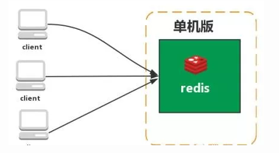
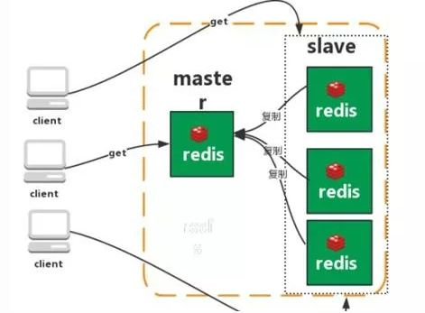
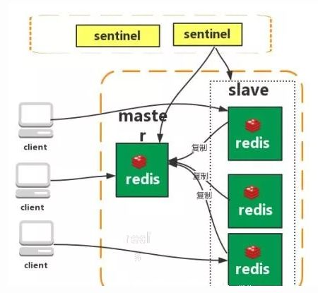
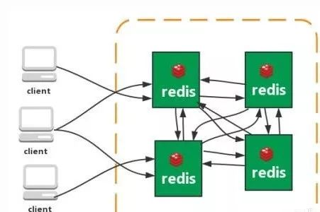

# 什么是 Redis
Redis 是一个开源的使用 ANSI C 语言编写、遵守 BSD 协议、支持网络、可基于内存亦可持久化的日志型、Key-Value 数据库，并提供多种语言的 API 的非关系型数据库。
传统数据库遵循 ACID 规则。而 Nosql（Not Only SQL 的缩写，是对不同于传统的关系型数据库的数据库管理系统的统称） 一般为分布式而分布式一般遵循 CAP 定理。
redis 底层实际上是个 hashtable
CAP定理
一个分布式系统不可能同时满足以下三种，一致性（C:Consistency）, 可用性（A:Available）, 分区容错性（P:Partition Tolerance）. 在此 ZooKeeper 保证的是 CP，ZooKeeper 不能保证每次服务请求的可用性，在极端环境下，ZooKeeper 可能会丢弃一些请求，消费者程序需要重新请求才能获得结果。另外在进行 leader 选举时集群都是不可用，所以说，ZooKeeper 不能保证服务可用性。（Base 理论 CA 强一致性和最终一致性）
# Redis 的应用场景
- 消息队列
- 缓存
- 共享 session
- 分布式锁
# 单线程的 Redis 为什么快
- 合理高效的数据结构
- 基于内存操作
- 采用了非阻塞 I/O 多路复用机制
- 单线程操作，避免了上下文的切换
I/O机制
- 阻塞 I/O
首先，要从你常用的 IO 操作谈起，比如 read 和 write，通常 IO 操作都是阻塞 I/O 的，也就是说当你调用 read 时，如果没有数据收到，那么线程或者进程就会被挂起，直到收到数据。阻塞的意思，就是一直等着。阻塞 I/O 就是等着数据过来，进行读写操作。应用的函数进行调用，但是内核一直没有返回，就一直等着。应用的函数长时间处于等待结果的状态，我们就称为阻塞 I/O。每个应用都得等着，每个应用都在等着，浪费啊！很像现实中的情况。大家都不干活，等着数据过来，过来工作一下，没有的话继续等着 - 非阻塞 I/O
非阻塞 IO 很简单，通过 fcntl（POSIX）或 ioctl（Unix）设为非阻塞模式，这时，当你调用 read 时，如果有数据收到，就返回数据，如果没有数据收到，就立刻返回一个错误，如 EWOULDBLOCK。这样是不会阻塞线程了，但是你还是要不断的轮询来读取或写入。相当于你去查看有没有数据，告诉你没有，过一会再来吧！应用过一会再来问，有没有数据？没有数据，会有一个返回。但是依旧很不好。应用必须得过一会来一下，问问内核有木有数据啊。这和现实很像啊！好多情况都得去某些地方问问好了没有？木有，明天再过来。明天，好了木有？木有，后天再过来。。。。。忙碌的应用。。。。 - I/O 多路复用
多路复用是指使用一个线程来检查多个文件描述符（Socket）的就绪状态，比如调用 select 和 poll 函数，传入多个文件描述符（FileDescription，简称 FD），如果有一个文件描述符（FileDescription）就绪，则返回，否则阻塞直到超时。得到就绪状态后进行真正的操作可以在同一个线程里执行，也可以启动线程执行（比如使用线程池）。虾米意思？就是派一个代表，同时监听多个文件描述符是否有数据到来。等着等着，如有有数据，就告诉某某你的数据来啦！赶紧来处理吧。有没有很感动，一个人待着，帮了很多人。医院的黄牛，一个人排队，大家只要把钱给它，它就会把号给需要的人，开个玩笑。。。。
# Redis 的数据结构及使用场景
- String（基本类型）
字符串：字符串类型是 Redis 最基础的数据结构，首先键都是字符串类型，而且 其他几种数据结构都是在字符串类型基础上构建的，我们常使用的 set key value 命令就是字符串。常用在缓存、计数、共享 Session、限速等 - Hash（基本类型）
哈希：在 Redis 中，哈希类型是指键值本身又是一个键值对结构，哈希可以用来存放用户信息，比如实现购物车 - List（基本类型）
列表类型是用来存储多个有序的字符串。可以做简单的消息队列的功能。 - Set（基本类型）
集合类型也是用来保存多个的字符串元素，但和列表类型不一 样的是，集合中不允许有重复元素，并且集合中的元素是无序的，不能通过索引下标获取元素。利用 Set 的交集、并集、差集等操作，可以计算共同喜好，全部的喜好，自己独有的喜好等功能。 - Sorted Set（基本类型）
有序集合多了一个权重参数 Score，集合中的元素能够按 Score 进行排列。可以做排行榜应用，取 TOP N 操作。 - Bitmap
位图是支持按 bit 位来存储信息，可以用来实现 布隆过滤器（BloomFilter）和 统计某用户登录天数
# Redis 的过期策略
Redis 过期策略采用定时删除 + 惰性删除策略
定时删除
Redis 启用一个定时器定时监视所有的 key，判断 key 是否过期，过期则将其删除。这种策略可以保证过期的 key 全部被删除，但是每次都需要遍历内存中的数据，非常消耗 cpu 的资源，并且当 key 已过期，而定时器还处于未唤醒状态时，key 仍可以使用惰性删除
在获取 key 时，先判断 key 是否已经过期，如已经过期则删除。这种策略有一个缺点，就是如果 key 一直没被使用，则会一直保存在内存中
这两种策略天然互补，当两种策略结合起来用后，定时删除策略就会发生变化，定时删除将不再扫描内存里全部的数据，而是抽取一部分 key 进行检查，这样就降低了 cpu 资源的消耗，惰性删除策略互补了未抽取检查的 key，基本满足了所有的要求。但是有时候就是那么巧，既没有被定时器抽取，也没有被使用，这些数据该如何从内存中消息呢？没关系，Redis 还有内存淘汰机制，当内存不够用时，将会触发内存淘汰机制
# Redis 内存淘汰机制
内存淘汰机制有以下几种：
- 当内存不足以容纳新写入数据时，新写入操作会报错。（Redis 默认策略）
- 当内存不足以容纳新写入数据时，在键空间中，移除最近最少使用的 Key。（LRU 推荐使用）
- 当内存不足以容纳新写入数据时，在键空间中，随机移除某个 Key。
- 当内存不足以容纳新写入数据时，在设置了过期时间的键空间中，移除最近最少使用的 Key。这种情况一般是把 Redis 既当缓存，又做持久化存储的时候才用。
- 当内存不足以容纳新写入数据时，在设置了过期时间的键空间中，随机移除某个 Key。
- 当内存不足以容纳新写入数据时，在设置了过期时间的键空间中，有更早过期时间的 Key 优先移除。
Redis 的 LRU (Least Recently Used) 具体实现:
传统的 LRU 是使用栈的形式，每次都将最新使用的移入栈顶，但是用栈的形式会导致执行 select * 的时候大量非热点数据占领头部数据，所以需要改进。Redis 每次按 key 获取一个值的时候，都会更新 value 中的 lru 字段为当前秒级别的时间戳。Redis 初始的实现算法很简单，随机从 dict 中取出五个 key, 淘汰一个 lru 字段值最小的。在 3.0 的时候，又改进了一版算法，首先第一次随机选取的 key 都会放入一个 pool 中 (pool 的大小为 16),pool 中的 key 是按 lru 大小顺序排列的。接下来每次随机选取的 keylru 值必须小于 pool 中最小的 lru 才会继续放入，直到将 pool 放满。放满之后，每次如果有新的 key 需要放入，需要将 pool 中 lru 最大的一个 key 取出。淘汰的时候，直接从 pool 中选取一个 lru 最小的值然后将其淘汰。
# Redis 持久化机制
Redis 为了保证效率，数据缓存在了内存中，但是会周期性的把更新的数据写入磁盘或者把修改操作写入追加的记录文件中，以保证数据的持久化。Redis 有两种持久化机制：RDB (Redis DataBase) 和 AOF (Append Only File)
RDB
快照形式是直接把内存中的数据保存到一个 dump 的文件中，定时保存，保存策略。当 Redis 需要做持久化时，Redis 会 fork 一个子进程，子进程将数据写到磁盘上一个临时 RDB 文件中。当子进程完成写临时文件后，将原来的 RDB 替换掉。AOF
把所有的对 Redis 的服务器进行修改的命令都存到一个文件里，命令的集合。使用 AOF 做持久化，每一个写命令都通过 write 函数追加到 appendonly.aof 中。aof 的默认策略是每秒钟 fsync 一次，在这种配置下，就算发生故障停机，也最多丢失一秒钟的数据。缺点是对于相同的数据集来说，AOF 的文件体积通常要大于 RDB 文件的体积。根据所使用的 fsync 策略，AOF 的速度可能会慢于 RDB。
AOD 写入保存：
WRITE：根据条件，将 aof_buf 中的缓存写入到 AOF 文件
SAVE：根据条件，调用 fsync 或 fdatasync 函数，将 AOF 文件保存到磁盘中
存储结构:
内容是 redis 通讯协议 (RESP) 格式的命令文本存储。比较
- aof 文件比 rdb 更新频率高，优先使用 aof 还原数据。
- aof 比 rdb 更安全也更大
- rdb 性能比 aof 好
- 如果两个都配了优先加载 AOF
Redis 默认是快照 RDB 的持久化方式。对于 redis 服务重启，会优先加载 AOF,AOF 没找到的话再找 RDB，因为 AOF 文件的数据要全于 RDB。对于主从同步来说，主从刚刚连接的时候，进行全量同步（RDB）；全同步结束后，进行增量同步 (AOF)
# Redis 的 RESP 协议
该协议是用于与 Redis 服务器通信的，用的较多的是 Redis-cli 通过 pipe 与 Redis 服务器联系；
协议如下：
- 客户端以规定格式的形式发送命令给服务器；
- 服务器在执行最后一条命令后，返回结果。
客户端发送命令的格式 (类型)：5 种类型
- 简单字符串 Simple Strings, 以 "+" 加号 开头
- 错误 Errors, 以 "-" 减号 开头
- 整数型 Integer， 以 ":" 冒号开头
- 大字符串类型 Bulk Strings, 以 "$" 美元符号开头，长度限制 512M
- 数组类型 Arrays，以 "*" 星号开头
# Redis 的管道 pipeline
对于单线程阻塞式的 Redis，Pipeline 可以满足批量的操作，把多个命令连续的发送给 Redis Server，然后一一解析响应结果。Pipelining 可以提高批量处理性能，提升的原因主要是 TCP 连接中减少了 “交互往返” 的时间。pipeline 底层是通过把所有的操作封装成流，redis 有定义自己的出入输出流。在 sync () 方法执行操作，每次请求放在队列里面，解析响应包。
# Redis 常见架构
单机版

特点：简单主从复制

Redis 的复制（replication）功能允许用户根据一个 Redis 服务器来创建任意多个该服务器的复制品，其中被复制的服务器为主服务器（master），而通过复制创建出来的服务器复制品则为从服务器（slave）。 只要主从服务器之间的网络连接正常，主从服务器两者会具有相同的数据，主服务器就会一直将发生在自己身上的数据更新同步 给从服务器，从而一直保证主从服务器的数据相同。
特点：- master/slave 角色
- master/slave 数据相同
- 降低 master 读压力在转交从库
缺点：
- 无法保证高可用
- 没有解决 master 写的压力
哨兵模式

Redis sentinel 是一个分布式系统中监控 redis 主从服务器，并在主服务器下线时自动进行故障转移。其中三个特性：
监控（Monitoring）： Sentinel 会不断地检查你的主服务器和从服务器是否运作正常。
提醒（Notification）： 当被监控的某个 Redis 服务器出现问题时， Sentinel 可以通过 API 向管理员或者其他应用程序发送通知。
自动故障迁移（Automatic failover）： 当一个主服务器不能正常工作时， Sentinel 会开始一次自动故障迁移操作。
特点：- 保证高可用
- 监控各个节点
- 自动故障迁移
缺点：
- 主从模式，切换需要时间丢数据
- 没有解决 master 写的压力
集群（proxy 型）

Twemproxy 是一个 Twitter 开源的一个 redis 和 memcache 快速 / 轻量级代理服务器；Twemproxy 是一个快速的单线程代理程序，支持 Memcached ASCII 协议和 redis 协议。
特点：- 多种 hash 算法：MD5、CRC16、CRC32、CRC32a、hsieh、murmur、Jenkins
- 支持失败节点自动删除
- 后端 Sharding 分片逻辑对业务透明，业务方的读写方式和操作单个 Redis 一致
缺点：
- 增加了新的 proxy，需要维护其高可用
- failover 逻辑需要自己实现，其本身不能支持故障的自动转移可扩展性差，进行扩缩容都需要手动干预
集群（直连型）
从 redis 3.0 之后版本支持 redis-cluster 集群，Redis-Cluster 采用无中心结构，每个节点保存数据和整个集群状态，每个节点都和其他所有节点连接。
特点：- 无中心架构（不存在哪个节点影响性能瓶颈），少了 proxy 层
- 数据按照 slot 存储分布在多个节点，节点间数据共享，可动态调整数据分布
- 可扩展性，可线性扩展到 1000 个节点，节点可动态添加或删除
- 高可用性，部分节点不可用时，集群仍可用。通过增加 Slave 做备份数据副本
- 实现故障自动 failover，节点之间通过 gossip 协议交换状态信息，用投票机制完成 Slave 到 Master 的角色提升。
缺点：
- 资源隔离性较差，容易出现相互影响的情况。
- 数据通过异步复制，不保证数据的强一致性
# Redis 常见问题解决方案
# Redis 与 Mysql 双写一致性方案
先更新数据库，再删缓存。数据库的读操作的速度远快于写操作的，所以脏数据很难出现。可以对异步延时删除策略，保证读请求完成以后，再进行删除操作。
# Redis 并发竞争 key 的解决方案
- 分布式锁 + 时间戳
- 利用消息队列，把并行操作变成串行操作
# 如何解决 Redis 缓存穿透问题
Redis 缓存穿透指查询的 key 缓存中没有，数据库也没有，每次针对此 key 的请求从缓存获取不到数据，请求就到数据库获取数据，从而可能压垮数据库。比如用一个不存在的用户 id 获取用户信息，不论缓存还是数据库都没有，若黑客利用此漏洞进行攻击可能压垮数据库
解决方案：
- 在接口做校验
- 存 null 值
- 布隆过滤器：将所有可能的值映射到布隆过滤器中，查询时先判断 key 是否存在布隆过滤器中，存在才往下执行，如果不存在则直接返回。布隆过滤器将值进行多次哈希 bit 存储，布隆过滤器说某个元素在，可能会被误判。布隆过滤器说某个元素不在，那么一定不在。
# 如何解决 Redis 缓存击穿问题
Redis 缓存击穿指查询的 key 缓存中不存在（通常由于失效而不存在），大量请求直接到数据库查询，压垮数据库。
解决方案：
- 互斥锁锁：业界比较常用的做法，是使用 mutex。简单的说当缓存失效时，不是立刻去查询数据库，而是先去争夺锁，
# 如何解决 Redis 缓存雪崩
Redis 缓存雪崩指大量的 key 在同一时间失效，导致大量请求直接去数据库查询数据。缓存雪崩可以造成缓存服务器宕机，高峰期缓存失效，热点缓存失效。
解决方案：
- 给失效时间添加随机数
- 热点数据设置永不失效
- 缓存服务采用高可用架构
- 建立监控系统，提前预知雪崩
# Redis 和 memcached 的区别
- 存储方式
memcache 会把数据全部存在内存之中，断电后会挂掉，数据不能超过内存大小。redis 有部分数据存在硬盘上，这样能保证数据的持久性。 - 数据支持类型
memcache 对数据类型的支持简单，只支持简单的 key-value，，而 redis 支持五种数据类型 - 底层模型
它们之间底层实现方式以及与客户端之间通信的应用协议不一样。redis 直接自己构建了 VM 机制，因为一般的系统调用系统函数的话，会浪费一定的时间去移动和请求。 - value 的大小
redis 可以达到 1GB，而 memcache 只有 1MB。